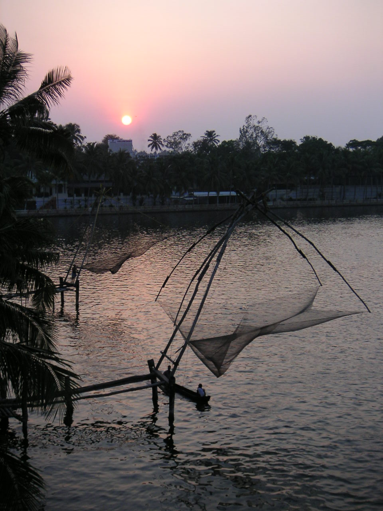
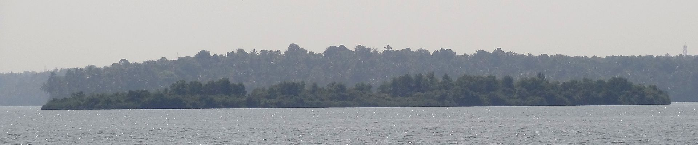
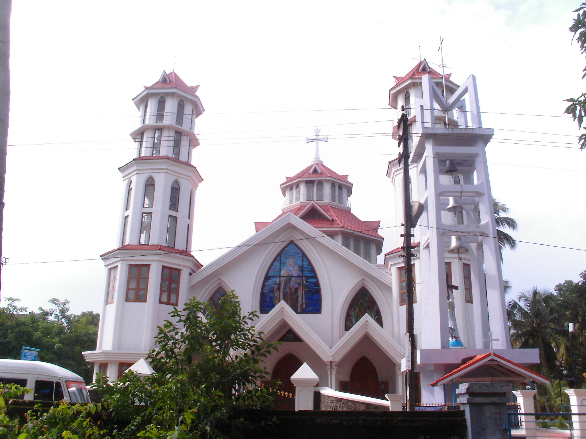

.jpg)

Kollam, also known by its former name Quilon pronunciation, is an ancient seaport and city on the Malabar Coast of India bordering the Laccadive Sea, which is a part of the Arabian Sea. It is 71 km (44 mi) north of the state capital Thiruvananthapuram.The city is on the banks of Ashtamudi Lake and the Kallada river.It is the headquarters of the Kollam district. Kollam is the fourth largest city in Kerala and is known for cashew processing and coir manufacturing. It is the southern gateway to the Backwaters of Kerala and is a prominent tourist destination.
The park located near the town of Chadayamangalam (Jatayumangalam), which was named for Jatayu. Jatayu was a demi-god in Ramayana (a Hindu epic) who had the form of a vulture. According to the epic, Ravana was attempting to abduct Sita to Lanka when Jatayu tried to rescue her. Jatayu fought valiantly with Ravana, but as Jatayu was very old Ravana soon defeated him, clipping his wings, and Jatayu fell onto the rocks in Chadayamangalam. Rama and Lakshmana while on the search for Sita, chanced upon the stricken and dying Jatayu, who informed them of the battle with Ravana and told them that Ravana had headed South.
Quilon Aerodrome or Kollam Airport was an aerodrome in the city of Kollam in the former state of Travancore, now in Kerala, India.During the 1920s, there were no other civil aerodromes in the kingdoms of Cochin, Travancore and the Malabar District at the time of the British ruled Madras Presidency. With the commissioning of Trivandrum International Airport in 1932 at state capital 57 kilometres (35 mi) to the south, the aerodrome fell into disuse and came to be known as the Asramam Maidan
Ashtamudi Lake (Ashtamudi Kayal), in the Kollam District of the Indian state of Kerala, is the most visited backwater and lake in the state. It possesses a unique wetland ecosystem and a large palm-shaped (also described as octopus-shaped) water body, second only in size to the Vembanad estuary ecosystem of the state. Ashtamudi means 'eight braids' (Ashta : 'eight'; mudi : 'hair braids') in the local Malayalam language. The name is indicative of the lake's topography with its multiple branches. The lake is also called the gateway to the backwaters of Kerala and is well known for its houseboat and backwater resorts.Ashtamudi Wetland was included in the list of wetlands of international importance, as defined by the Ramsar Convention for the conservation and sustainable utilization of wetlands.
Thekkumbhagam or Thekkumbhagom is the southern border town of Paravur municipality in the Kollam district of Kerala, India. It is located at the Southern tip of Kollam's coastal area. It is in the Arabian Sea coast.Thekkumbhagam-Kappil estuary point in the Kollam-Thiruvananthapuram coastal border is one of the emerging tourism spots in the state.On 1936, during formation, Thekkumbhagam was one of the 9 territories of Paravur Panchayath. Thekkumbhagam estuary is one among the twin estuary points in Paravur. The other one is Pozhikara estuary.
City of Kollam or Quilon is a Port city in South India and was the commercial capital of erstwhile Kingdom of Travancore.It is situated on the Laccadive Sea coast of South Kerala. The city is known as the "Gateway to the backwaters of Kerala".The city lies on the banks of Ashtamudi Lake, Kerala's second largest lake, on the Arabian sea coast. Major parts of Kollam city are covered by Ashtamudi Lake.